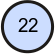
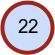
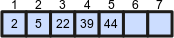

Visualizador de Árvore Binária
Modificado e Traduzido por Guilherme Esdras
Elementos gráficos
Aqui estão listados todos os elementos gráficos usados na aplicação e seus significados.
| Gráfico | Significado | Descrição |
|---|---|---|
|  | Nó | Nó com seu respectivo valor. |
|  | Nó selecionado | O nó selecionado é destacado com uma borda vermelha. Você pode selecionar o nó clicando nele. |

|
Aresta | Uma aresta é uma referência de um nó para outro. O nó referenciado é chamado de filho do nó que o referencia. O nó referenciando é chamado de pai do nó referenciado. Ou seja, por exemplo: Se o nó no lado da ponta da seta é igual a 20 e o nó do outro lado da seta é igual a 30, então o nó 30 é pai do nó 20, e o nó 20, por sua vez, é o filho do nó 30. |

|
Pai e seus filhos | Em uma árvore binária há um limite máximo de dois filhos por nó para qualquer nó da árvore - o filho esquerdo e o filho direito. |

|
Sinais de comparação | Algoritmos muito usados para comparar dois nós (e seus valores). Nessa aplicação, pode ser que um destes sinais seja mostrado na parte superior central do nó em cada passo do algoritmo que use comparação. |

|
Continuar para o pai/ |
Algoritmos geralmente percorrem uma árvore ou chamam eles mesmos recursivamente em um filho do nó que está sendo processado. Estes elementos gráficos irão lhe mostrar qual é o próximo nó a ser visitado. |
| Sem filho esquerdo/ |
Quando um nó não possuir filhos esquerdo ou direito. | |
 |
Entrar/ |
Uma forma de visualizar o início ou o fim de um algoritmo que percorre uma árvore. |

|
Veio do filho esquerdo/ |
As vezes é importante saber se o algoritmo veio do filho esquerdo ou do filho direito. Estas setas indicam se esta condição é satisfeita. |

|
Não veio do filho esquerdo/ |
Assim como o anterior, mas indicando o contrário (quando a condição não é satisfeita). |
|  | Array (Lista) | Uma árvore pode ser representada por um Array, transformada em um Array ou ser construída à partir de um Array. O Array é indexado (1, 2, 3, ... 7) e possui valores (2, 5, 22, 39, 44). Os últimos dois índeces permanecem vazios. |